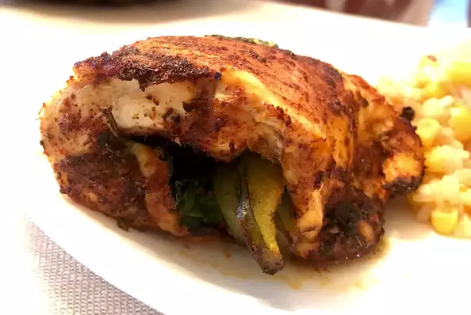

Chicken Breast Recipes

Mexican-Style Air-Fry Chicken Breast
High-protein, healthy, and easy dish that nourish your
body and saves time.
Ingredients
- 4 extra-long toothpicks
- 4 teaspoons chili powder, divided
- 4 teaspoons ground cumin, divided
- 1 skinless, boneless chicken breast
- 2 teaspoons chipotle flakes
Procedures
- Place toothpicks in a small bowl and cover with water; let them soak to keep
them from burning while cooking.
- Mix 2 teaspoons chili powder and 2 teaspoons cumin in a shallow dish.
- Preheat an air fryer to 400 degrees F (200 degrees C).
- Place chicken breast on a flat work surface. Slice horizontally through the middle.
Pound each half using a kitchen mallet or rolling pin until about 1/4-inch thick.